Dataset PollenBB16 (16 especies) — Pipeline YOLO11 y μSAM (Segment Anything Model for Microscopy).
Mario Sigal Aguirre.
Tesis de Licenciatura en Ciencias de Datos.
2026-2027.
Enfoques neuromórficos con cámaras de eventos (DVS) para pupil tracking de ultra alta frecuencia y detección de liveness facial mediante dinámica ocular temporal.
Nicolas Mastropasqua · Dir: Prof. Daniel Acevedo.
Tesis Doctoral · Depto. de Computación, FCEN - UBA.
2025-2027.
Modelo Bi-Gru con cross-attention entre diferentes partes del cuerpo entrenado en LSA64 (Lenguaje de Señas Argentino, 64 señas) utilizando mediapipe como extractor de pose
Ignacio Giuliano Iannello.
Tesis de Licenciatura en Ciencias de la computación.
2026-2027.
Módulo liviano para detección de acciones en video: transforma un clasificador de imágenes 2D en un detector de acciones temporales sin pagar el costo de una red 3D.
Roni Barylko.
Tesis de Licenciatura en Ciencias de la Computación.
2026-2027.
Simulación digital del flujo vehicular en SUMO integrada con detección en tiempo real de vehículos (YOLO). Entrenado con Aprendizaje por Refuerzo para optimizar la secuencia y sincronización de semáforos.
Julián Recalde Campos.
Tesis de Licenciatura en Ciencias de la Computación.
2026-2027.
Detección de inputs a partir de una red neuronal que identifica interacciones con el dispositivo. Utiliza YOLO y MediaPipe.
Nicolas Matias Yañez.
Tesis de Licenciatura en Ciencias de la Computación.
2026-2027.
Estrategia combinada de Deep Learning y microservicios para la detección no invasiva de infiltración tumoral oculta en resonancia magnética multiparamétrica preoperatoria (mpMRI).
Dra. Cecilia Ana Suárez.
CONICET · Depto. de Computación · FCEN - UBA.
2024-2026.
Ignacio Giuliano Iannello · Tesis de Licenciatura en Ciencias de la Computación · 2026-2027
El sistema implementa un modelo recurrente Bi-GRU con mecanismos de atención cruzada (cross-attention) entre diferentes regiones corporales (articulaciones de brazos, tronco y puntos clave de las manos), entrenado sobre el corpus LSA64 (Lengua de Señas Argentina). La extracción previa de pose y coordenadas tridimensionales de las articulaciones se realiza mediante MediaPipe, transformando las secuencias de video en dinámicas temporales del esqueleto para la clasificación en tiempo real.
Nicolas Matias Yañez · Tesis de Licenciatura en Ciencias de la Computación · 2026-2027
Este sistema combina modelos de detección de objetos en tiempo real (YOLO) para localizar con precisión el mando de videojuegos (gamepad), sticks analógicos (derecho e izquierdo) y gatillos (triggers), junto con segmentación semántica y modelos de estimación de pose en manos para registrar la interacción motriz y pulsaciones continuas durante la manipulación del controlador.
Julián Recalde Campos · Tesis de Licenciatura en Ciencias de la Computación · 2026-2027
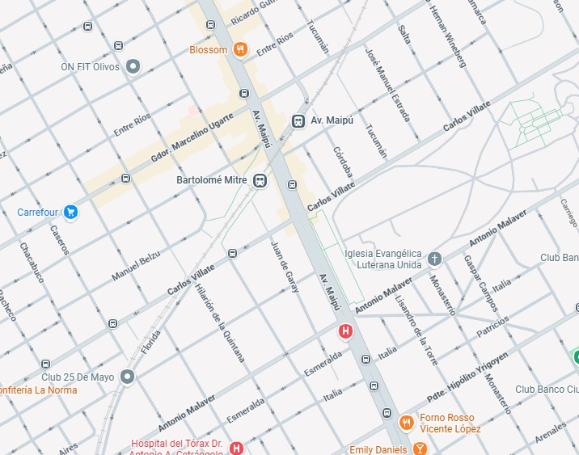
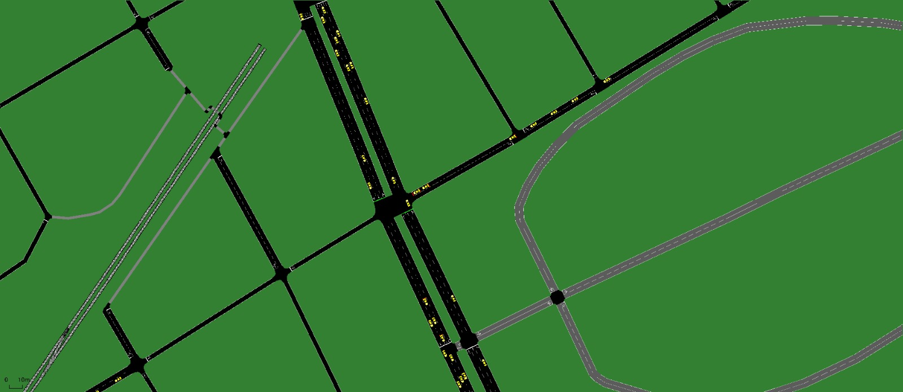
Este trabajo implementa una arquitectura híbrida que une la observación física del tráfico con la simulación digital. A partir de la cartografía real de Google Maps, se sintetiza automáticamente el grafo de vías y carriles en SUMO (Simulation of Urban MObility). Un modelo YOLO procesa la señal de video de cámaras urbanas para detectar vehículos y estado de luces semafóricas, alimentando al orquestador en tiempo real. Mediante Aprendizaje por Refuerzo (RL), la política de control ajusta dinámicamente los ciclos y fases de los semáforos, minimizando demoras y colas de espera vehiculares.
Roni Barylko · Tesis de Licenciatura en Ciencias de la Computación · FCEN · UBA · 2026-2027
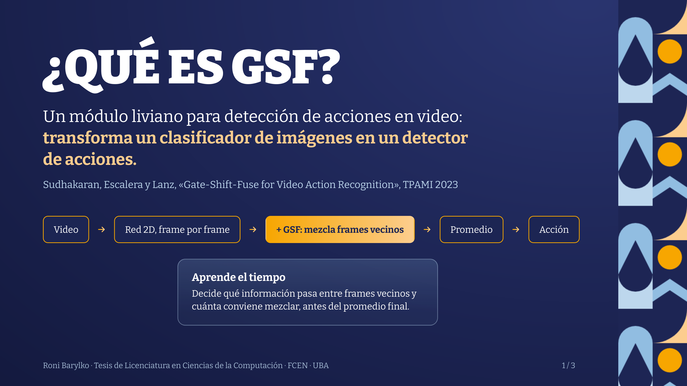
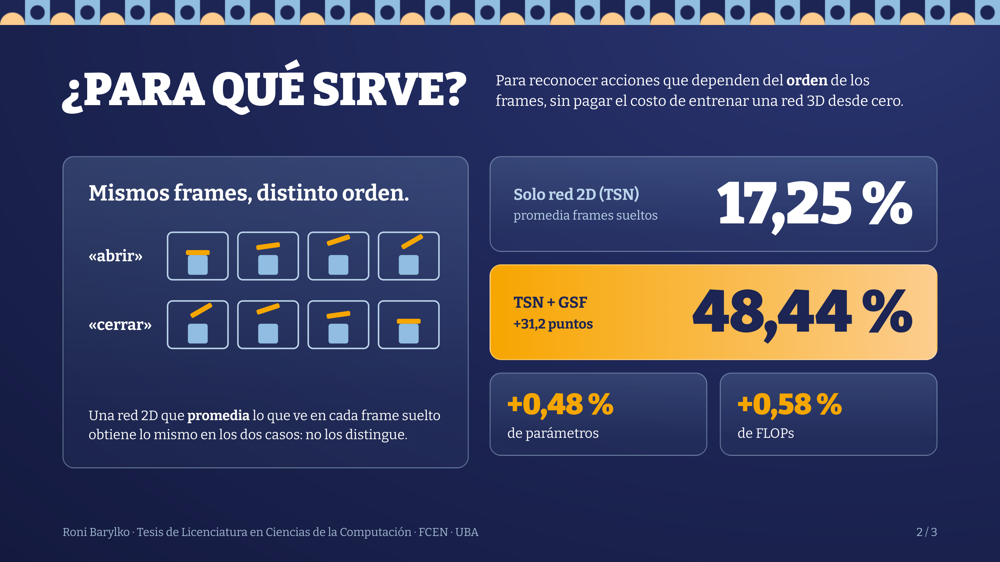
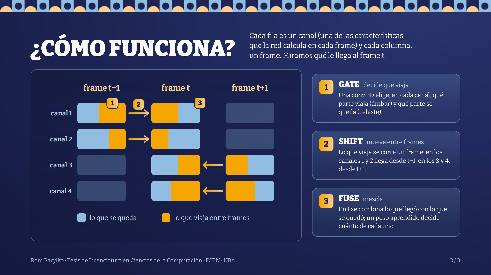
Este trabajo aborda la clasificación de acciones complejas en video superando la ceguera temporal de los clasificadores 2D aislados sin incurrir en la sobrecarga computacional de los modelos 3D convolucionales completos. A través del mecanismo Gate-Shift-Fuse (GSF) (Sudhakaran, Escalera y Lanz, TPAMI 2023), la red aprende dinámicamente a desplazar e intercambiar información entre cuadros vecinos en canales específicos: Gate determina qué características viajan, Shift propaga la información temporal hacia adelante y atrás, y Fuse combina los canales mediante ponderaciones aprendidas. El resultado es un salto de rendimiento de +31,2 puntos porcentuales con tan solo un +0,48% de parámetros extra y +0,58% de FLOPs.
Dra. Cecilia Ana Suárez · Investigadora Adjunta CONICET · Depto. de Computación / INFINA (FCEN - UBA) · 🔍 Google Scholar
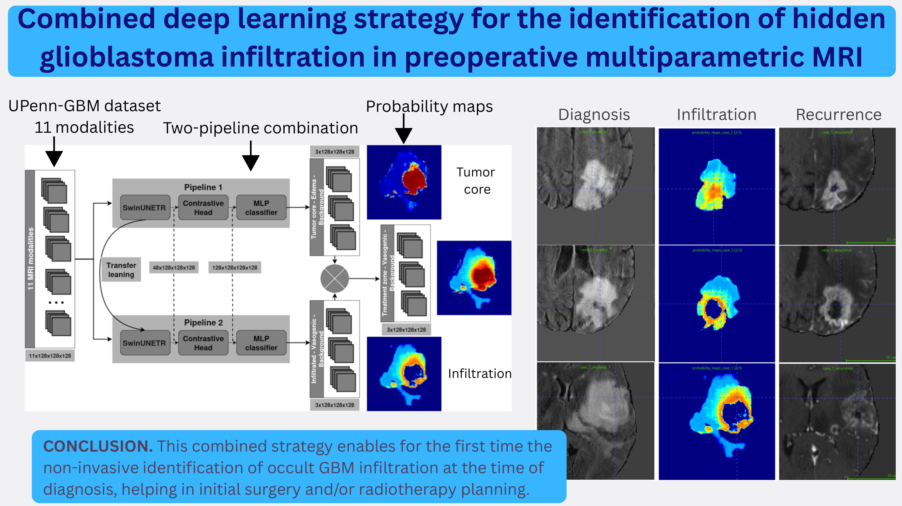
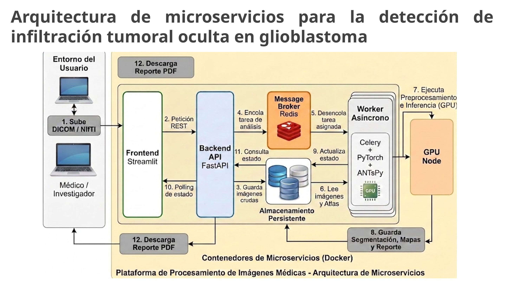
El glioblastoma multiforme (GBM) es la neoplasia cerebral primaria más agresiva y letal. Su principal desafío clínico es su alta capacidad infiltrativa: las células cancerígenas invaden el parénquima cerebral y el edema peritumoral más allá del núcleo tumoral visible en secuencias convencionales de resonancia magnética. Esta infiltración microscópica oculta es la causante fundamental de las recidivas tumorales tras la resección quirúrgica y la radioterapia.
La investigación liderada por la Dra. Cecilia Ana Suárez (investigadora del CONICET y docente en el Departamento de Computación / Instituto de Física Interdisciplinaria y Aplicada de la Facultad de Ciencias Exactas y Naturales de la UBA) aborda esta problemática mediante una sinergia entre neuroimagen multiparamétrica, inteligencia artificial y arquitectura de software científico:
Nicolas Mastropasqua · Director: Prof. Daniel Acevedo · Colab: Nicolas Carrasco (Becario BIICC) · Depto. de Computación / ICC (FCEN - UBA)
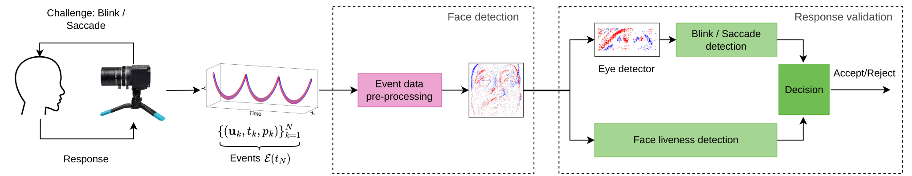
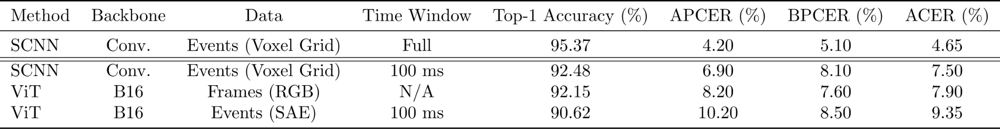
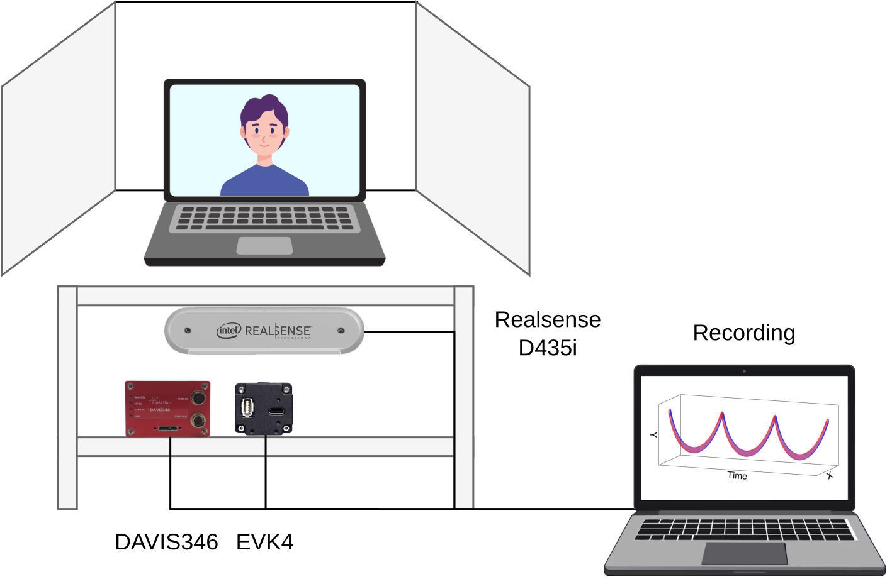
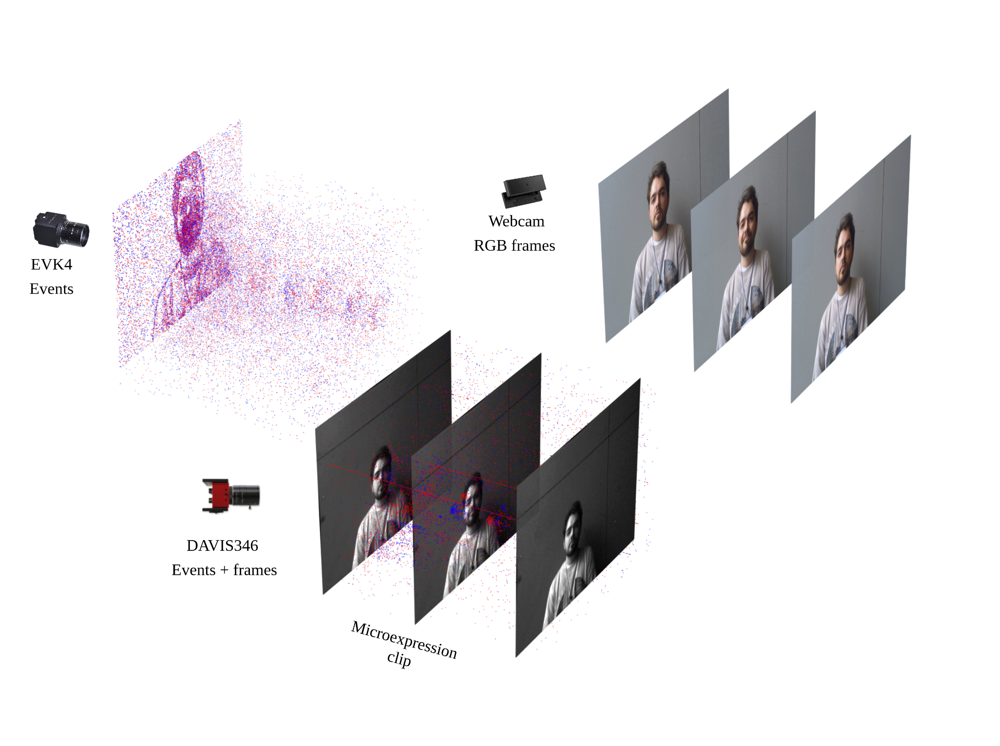
Las cámaras de eventos (Event Cameras / Dynamic Vision Sensors - DVS) representan un cambio de paradigma bioinspirado respecto a las cámaras fotográficas convencionales. En lugar de capturar matrices fijas de píxeles a frecuencias periódicas (como 30 o 60 FPS), cada píxel responde de forma autónoma y asincrónica a cambios en el logaritmo de la intensidad lumínica con una resolución temporal de microsegundos, rango dinámico superior a 120 dB y consumo del orden de los milivatios.
Esta línea de investigación doctoral, desarrollada por Nicolas Mastropasqua bajo la dirección del Prof. Daniel Acevedo en el Departamento de Computación (FCEN - UBA), investiga algoritmos neuromórficos para análisis facial de ultra bajo consumo y eye tracking de alta fidelidad: